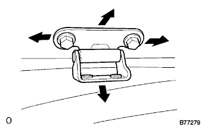
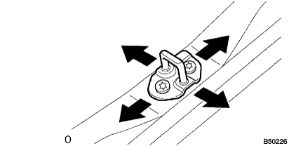

Back door adjustment |
| 1. Backdoor panel SUB-ASSY inspection |
Confirm that it is within the reference value.
| 2. Backdoor panel SUB-ASSY adjustment |
|  |
Adjustments for the upper and lower and upper left and right directions of the upper and lower ends and upper left and right direction shall be made after loosening the bolt attached to the batsukudo hinge.
|  |
When adjusting the lower end of the Batsuku panel left and right direction and the Batsukudo Alot Tsukustica ASSY, use a torque socket wrench (T40) to loosen the striking bolt to the extent that the striker moves, and use a brass bar to hit the striker lightly.Adjust.